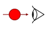
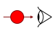

Aimantation transversale
Suite à l'impulsion RF, observez le déphasage des spins. Il est lié aux interactions spins-spins.
T2 du tissu :
Suite à l'impulsion RF, observez le déphasage des spins. Il est lié aux interactions spins-spins.
T2 du tissu :